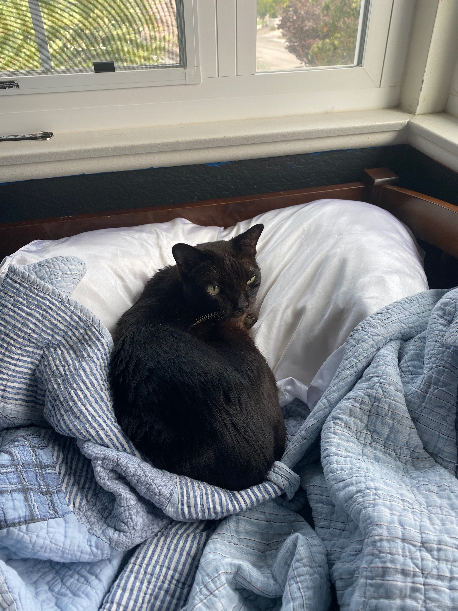

Welcome to my Portfolio!!
The name is Jason Douglas and here is some of my stuff!
A little bit about me!
Bio:I grew up in Santa Clarita, CA which is just outside of Los Angeles. (Technically it is part of LA but if I said that, everyone from LA would roast me so...) I have always really enjoyed computers and learning about them but I didn't get into programming until I went to college. Before college, I did theatre at an arts high school in LA called LACHSA (Los Angeles County High School for the Arts). It was a lot of fun and I do enjoy acting but it also helped me realize that it was not something I wanted to make a career out of. So now, I attend Loyola Marymount University as a Computer Science major. Fun fact, when I graduate from my undergrad, it will have been exactly 30 years since my dad graduated from LMU.
Here's a picture of my cat!
{kind=link}
His name is Coco! If you see a lil snot on his nose, that is because he's got allergies. I like to say he's allergic to cats but I don't think he really is.
{kind=link}
This is a photo and my dog Panda and I. He's so sweet although I think part of the reason he likes me is because I feed him. He's also the smallest dog my family has ever had. Before him, we only had Golden Retrievers. Also fun fact, this is the longest my hair has ever been. I decided to not cut it until the pandemic is over and here we are!
{kind=link}
I think she would get mad at me if I didn't include her so here's Chloe! She's been with me for over 10 years now. I like to think that she's grown up with me. I still remember the day we adopted her. Another dog, Precious had passed a few months prior and our other dog at the time, Murphy was really sad. He and Precious had been together for years and we also could feel this sad void. So we adopted Chloe. I love her to the moon and back.
SOME JASON DOUGLAS TALENTS
Talent 1: Acting Now, this is something I can confidently say I can do. My high school was audition-based and there were about 32 kids in my class out of thousands of applicants. After that, I did theatre 2 and a half hours a day, everyday for 4 school years. I haven't done any acting recently but once quarantine is over, watchout college theatre because here I come!
Talent 2: Accents and Dialects This is techically a subset of the first talent but they did train us to do different dialects. I can't remember every single one I was taught but ones I can still do are British, Scottish, Southern and New York. I can also sound like a surfer dude but I think that is just because I've lived in SoCal all my life.
Talent 3: Singing Okay so the obvious trend with my talents is they are all arts-based. While doing acting, I also concurrently learned how to sing. I wouldn't say I'm really good at it but I can carry a tune. I was also in a few musicals. I went to school for theatre and not singing and it shows.
Now for the important stuff
Projects I've worked on:
AidMap: A interactive map created for the IvyHacks Hackathon 2020. Based in React, AidMap was a web application so people could find different places if they needed a certain type of help. For example, if someone needed Wifi for online schooling, they could choose Wifi hotspots and then search for all avaliable hotspots around them. My group and I tracked Wifi hotspots and foodbanks. I was specifically a BackEnd developer incharge of integrating MapBox which also meant integrating the data.
Want to learn more about me? Here's my LinkedIn and here's my github!